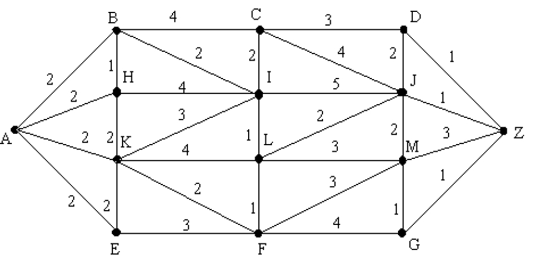

<div style="padding:5px;border:2px solid #eeeeee;box-shadow:1px 1px 1px 0px grey;">
<body style="font-size:20px ;">
<span style="font-size:22px;color:violet;">Dijkstra's algorithm:</span><br><br> This problem is concerned with finding the least cost path
from an originating node in a weighted graph to a destination node.<br><br>
<span style="font-size:22px;color:#226666;">Algorithm</span><br><br>
<pre style="line-height:100%;font-size:16px;font-family: monospace;
                background-color: #E0E0E0;
                padding: 15px;
                margin: 5px;
                border: solid;
                border-width: 1px;
                border-radius: 15px;
                box-shadow: inset 1px 1px 10px grey, 0 0 1px grey;white-space: -pre-wrap;
                white-space: -o-pre-wrap;
                word-wrap: break-word;
                white-space: pre-wrap;
                white-space: -moz-pre-wrap;">
Let G=(V,E) be a simple graph. Let a and z be any two
vertices of the graph. Suppose L(x ) denotes the label
of the vertex x which represent the length of shortest
path from the vertex a to the vertex x and wij denotes
the weight of the edge eij=<Vi, Vj>

1. Let P=&Phi; where P is the set of those vertices which
have permanent labels and T={all vertices in the
graph}
Set L(a)=0, L(x)=&infin; for all x&ne;a

2. Select the vertex v in T which has the smallest
label. This label is called permanent label of v.
Also set P=P {v} and T=T-{v}
If v=z then L(z) is the length of the shortest path
from the vertex a to z and stop.

3. If v is not equal z then revise the labels of
vertices of T that is the vertices which do not
have permanent labels.
The new label of vertex x in T is given by
L(x)=min(old L(x), L(v)+w(v, x))
Where w(v, x) is the weight of the edge joining the
vertex v and x. If there is no direct edge joining
v and x then take w(v, x)= &infin;

4. Repeat steps 2 and 3 until z gets the permanent
label.
</pre><br><br>
<span style="font-size:22px;color:#226666;">Example:</span><br>
Find the shortest path from A to Z.<br><br>
<br><br>
1. P=&Phi; ,T={A,B,C,D,E,F,G,H,I,J,K,L,M,Z}<br>
Let L(A)=0 and L(x)=&infin; for all x in T ( L(x) denotes label of x)<br>
2. P={A}, T={B,C,D,E,F,G,H,I,J,K,L,M,Z}<br>
A&ne;Z so calculate new labels for vertices in T<br><br>
<table border="2" cellpadding="5" style="color:#199697">
<tr><td>L(B)=min(&infin;, 0+2)=2 <td>L(H)=min(&infin;, 0+2)=2</td></tr>
<tr><td>L(C)=min(&infin;, 0+&infin;)=&infin;</td> <td>L(I)=&infin;</td></tr>
<tr><td>L(D)=&infin; </td><td>L(J)=&infin;</tr></td>
<tr><td>L(E)=min(&infin;, 0+2)=2 </td><td>L(K)=min(&infin;, 0+2)=2</td></tr>
<tr><td>L(F)=&infin;</td><td> L(L)=&infin;</td></tr>
<tr><td>L(G)=&infin; </td><td> L(M)= &infin; ; L(Z)= &infin;</td></tr>
</table><br><br>
3. v=B, vertex with smallest label, L(v)=2<br>
P={A,B}, T={C,D,E,F,G,H,I,J,K,L,M,Z}<br>
B&ne;Z so calculate new labels for vertices in T<br><br>
<table border="2" cellpadding="5" style="color:#199697">
<tr><td>L(C)=min(&infin;, 2+4)=6</td><td> L(I)=min(&infin;, 2+2)=4</td></tr>
<tr><td>L(D)=&infin;</td><td> L(J)=&infin;</td></tr>
<tr><td>L(E)=min(2,2+&infin;)=2</td><td> L(K)=min(2,2+&infin;)=2</td></tr>
<tr><td>L(F)=&infin;</td><td> L(L)=&infin;</td></tr>
<tr><td>L(G)=&infin;</td><td> L(M)=&infin;</td></tr>
<tr><td>L(H)=min(2,2+1)=2</td><td> L(Z)= &infin;</td></tr>
</table><br>
4. v=E, vertex with smallest label, L(v)=2<br>
P={A,B,E}, T={C,D,F,G,H,I,J,K,L,M,Z}<br>
B&ne;Z so calculate new labels for vertices in T<br><br>
<table border="2" cellpadding="5" style="color:#199697">
<tr><td>L(C)=min(6, 2+&infin;)=6</td><td>L(J)= &infin;</td></tr>
<tr><td>L(D)=&infin; </td> <td>L(K)=min(2,2+2)=2</td></tr>
<tr><td>L(F)=min(&infin;,2+3)=5</td><td></td></tr>
<tr><td>L(G)=&infin; </td> <td>L(L)=&infin;</td></tr>
<tr><td>L(H)=&infin; </td> <td>L(M)=&infin;</td></tr>
<tr><td>L(I)= &infin; </td> <td>L(Z)= &infin;</td></tr>
</table><br>
5. v=K, vertex with smallest label, L(v)=2<br>
P={A,B,E,K}, T={C,D,F,G,H,I,J,L,M,Z}<br>
K&ne;Z so calculate new labels for vertices in T<br><br>
<table border="2" cellpadding="5" style="color:#199697">
<tr><td>L(C)=min(6, 2+&infin;)=6</td><td> L(J)= &infin;</td></tr>
<tr><td>L(D)=&infin; </td><td>L(L)=min(&infin;,2+4)=6</td></tr>
<tr><td>L(F)=min(5,2+2)=4 </td><td>L(M)=&infin;</td></tr>
<tr><td>L(G)=&infin;</td><td> L(Z)= &infin;</td></tr>
<tr><td>L(H)=min(&infin;,2+2)=4</td><td></td></tr>
<tr><td>L(I)= min(&infin;,2+3)=5</td><td></td></tr>
</table><br>
6. v=F, vertex with smallest label, L(v)=4<br>
P={A,B,E,K,F}, T={C,D,G,H,I,J,L,M,Z}<br>
K&ne;Z so calculate new labels for vertices in T<br><br>
<table border="2" cellpadding="5" style="color:#199697">
<tr><td>L(C)=min(6, 4+&infin;)=6</td><td> L(I)= min(5,4+&infin;)=5</td></tr>
<tr><td>L(D)=&infin; </td><td>L(L)=min(6,4+1)=5</td></tr>
<tr><td>L(G)=min(&infin;,4+4)=8 </td><td>L(M)=min(&infin;,4+3)=7</td></tr>
<tr><td>L(G)=&infin; </td><td>L(Z)= &infin;</td></tr>
<tr><td>L(H)=min(4,4+&infin;)=4</td><td> L(J)= &infin;</td></tr>
</table><br>
7. v=H, vertex with smallest label, L(v)=4<br>
P={A,B,E,K,F,H}, T={C,D,G,I,J,L,M,Z}<br>
K&ne;Z so calculate new labels for vertices in T<br><br>
<table border="2" cellpadding="5" style="color:#199697">
<tr><td>L(C)=min(6, 4+&infin;)=6</td><td> L(J)= min(&infin;,4+&infin;)=&infin;</td></tr>
<tr><td>L(D)=&infin;</td><td> L(L)=min(5,4+&infin;)=5</td></tr>
<tr><td>L(G)=min(8,4+&infin;)=8 </td><td>L(M)=min(7,4+&infin;)=7</td></tr>
<tr><td>L(I)=min(5,4+4)=5 </td><td>L(Z)= &infin;</td></tr>
</table><br>
8. v=I, vertex with smallest label, L(v)=5<br>
P={A,B,E,K,F,H,I}, T={C,D,G,J,L,M,Z}<br>
I&ne;Z so calculate new labels for vertices in T<br><br>
<table border="2" cellpadding="5" style="color:#199697">
<tr><td>L(C)=min(6, 5+2)=6 </td><td> L(L)= min(5,5+1)=5</td></tr>
<tr><td>L(D)=&infin; </td><td>L(M)=min(7,5+&infin;)=7</td></tr>
<tr><td>L(G)=min(8,5+&infin;)=8 </td><td>L(Z)=&infin;</td></tr>
<tr><td>L(J)=min(&infin;,5+5)=10</td><td></td></tr>
</table><br>
9. v=L, vertex with smallest label, L(v)=5<br>
P={A,B,E,K,F,H,I,L}, T={C,D,G,J,M,Z}<br>
L&ne;Z so calculate new labels for vertices in T<br><br>
<table border="2" cellpadding="5" style="color:#199697">
<tr><td>L(C)=min(6, 5+&infin;)=6</td><td> L(J)= min(10,5+2)=7</td></tr>
<tr><td>L(D)=&infin; </td><td>L(M)=min(7,5+3)=7</td></tr>
<tr><td>L(G)=min(8,5+&infin;)=8 </td><td>L(Z)=&infin;</td></tr>
</table><br>
10. v=C, vertex with smallest label, L(v)=6<br>
P={A,B,E,K,F,H,I,L,C}, T={D,G,J,M,Z}<br>
C&ne;Z so calculate new labels for vertices in T<br><br>
<table border="2" cellpadding="5" style="color:#199697">
<tr><td>L(D)=min(&infin;,6+3)=9</td><td> L(M)= min(7,6+&infin;)=7</td></tr>
<tr><td>L(G)=min(8,6+&infin;)=8 </td><td>L(Z)=&infin;</td></tr>
<tr><td>L(J)=min(7,6+4)=7</td><td></td></tr>
</table><br>
11. v=J, vertex with smallest label, L(v)=7<br>
P={A,B,E,K,F,H,I,L,C,J}, T={D,G,M,Z}<br>
J&ne;Z so calculate new labels for vertices in T<br><br>
<table border="2" cellpadding="5" style="color:#199697">
<tr><td>L(D)=min(9,7+2)=9 </td><td> L(M)= min(7,7+2)=7</td></tr>
<tr><td>L(G)=min(8,7+&infin;)=8 </td><td>L(Z)=min(&infin;,7+1)=8</td></tr>
</table><br>
12. v=M, vertex with smallest label, L(v)=7<br>
P={A,B,E,K,F,H,I,L,C,J,M}, T={D,G,Z}<br>
M&ne;Z so calculate new labels for vertices in T<br><br>
<table border="2" cellpadding="5" style="color:#199697">
<tr><td>L(D)=min(9,7+&infin;)=9</td><td> L(Z)= min(8,7+3)=8</td></tr>
<tr><td>L(G)=min(8,7+1)=8</td><td></td></tr>
</table><br>
13. v=G, vertex with smallest label, L(v)=8<br>
P={A,B,E,K,F,H,I,L,C,J,M,G}, T={D,Z}<br>
G&ne;Z so calculate new labels for vertices in T<br><br>
<table border="2" cellpadding="5" style="color:#199697">
<tr><td>L(D)=min(9,8+&infin;)=9</td><td> L(Z)= min(8,8+1)=8</td></tr>
</table><br>
14. v=z, so we stop here, Shortest distance is 8<br>
Backtracking all steps we get, shortest path as:<br>
<span style="font-size:22px;color:#226666;"> A-K-F-L-J-Z</span> <br><br>

</div>
</body>